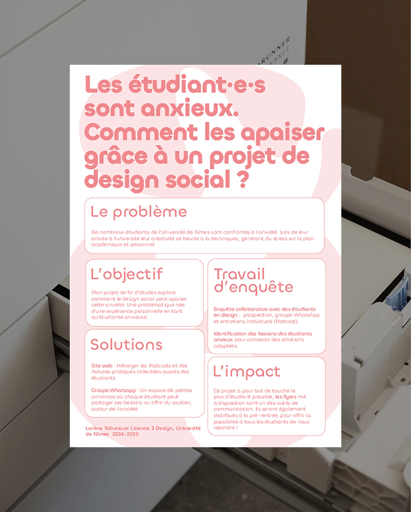

Design social · 2025
Anxiété &
Université
Et si on parlait vraiment d’anxiété à la fac ? Une identité visuelle, des flyers et un site pour proposer aux étudiant·es des moments où se changer les idées, près de Nîmes.
Mon plus grand projet de design social en 2025 : un dispositif pensé pour nous, par nous.
Découvrir le site du projet ↗
Le point de départ
En parler,
vraiment.
Ce projet est né d’un constat en L3 Design à l’Université de Nîmes : nous étions beaucoup à être anxieux·ses, avec le sentiment que peu de choses étaient pensées pour nous, par nous.
J’ai alors créé Anxiété & Université, un dispositif qui associe identité visuelle, supports imprimés et site web pour faciliter la rencontre et donner envie de participer.
L’objectif : que l’étudiant·e qui découvre le flyer se dise « C’est pour moi, je ne vais pas être jugé·e. »

Les choix graphiques
Accueillir
sans juger.
Une écriture inclusive assumée
Pour que chaque étudiant·e puisse se reconnaître dans le message et se sentir concerné·e.
Des couleurs douces, sans infantiliser
Une palette pensée pour créer une atmosphère apaisante, en évitant les codes trop attendus du bien-être.
La lisibilité avant tout
Une typographie claire, choisie avec l’intention de faciliter la lecture, y compris dans un moment d’angoisse.
Un site simple et direct
Une navigation conçue pour accéder facilement aux informations pratiques : où et quand venir.
L’intention sociale
Donner envie
de pousser une porte.
Pour moi, le design social consiste à créer des outils qui facilitent un premier pas. Ici, chaque support poursuit une même intention : rendre la rencontre plus accessible et permettre de se sentir accueilli·e.
Explorer Anxiété & Université ↗